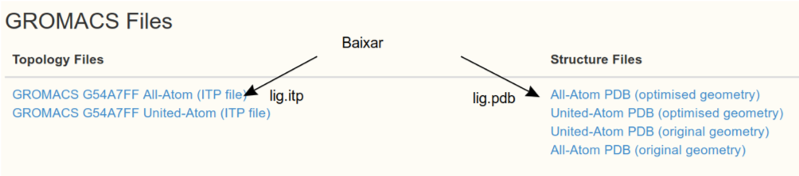
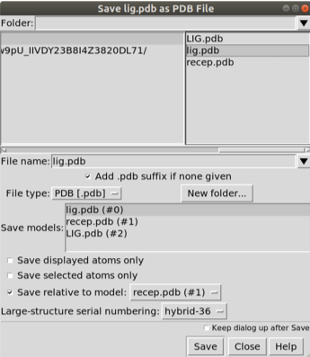
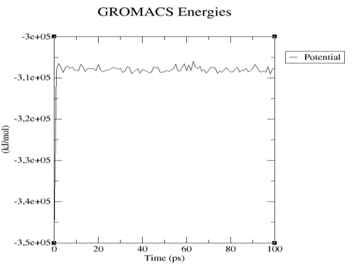
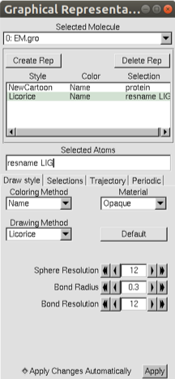

Otimização da ligação ligante receptor com dinâmica molecular
Prof. Euzébio Guimarães – DFAR – BioME - UFRN
Esse tutorial é baseado neste: http://www.mdtutorials.com/gmx/complex/index.html
Primeiros Passos
Este exemplo guiará um novo usuário através do processo de configuração de um sistema de simulação contendo uma proteína em complexo com um ligante. Este tutorial se concentra especificamente em questões relacionadas ao lidar com o ligante, supondo que o usuário esteja familiarizado com as operações básicas do GROMACS e o conteúdo de uma topologia. Se este não for o caso, por favor, consulte um tutorial mais básico antes de tentar este. Este tutorial requer uma versão do GROMACS na série 2018.1 já instalada se você o tutorial de instalação passado durante o curso.
Temos que baixar o arquivo de estrutura da proteína com o qual estaremos trabalhando. Para este tutorial, utilizaremos a lisozima L99A / M102Q de T4 (código PDB 3HTB). Vá para o site da RCSB e baixe o arquivo PDB para essa estrutura. Temos que isolar as estruturas do ligante em um arquivo recep.pdb e do ligante num arquivo lig_free.pdb. Temos que remover também o PO4 e BME.
Importante que a estrutura do receptor esteja sempre sem erros. Quais erros?
- Remover artefatos da cristalografia (PO4 e BME, neste caso).
- Completar tudo que falta na proteína (Pelo menos loops faltantes).
- Modificações pós-traducionais que podem provocar problemas a sua análise. (Procure outros tutoriais).
Utilize também a ferramenta DockPrep para remover defeitos automaticamente.

Apague o ligante após salva-lo. Agora salve o receptor com recep.pdb e converta para os arquivos necessários para o Gromacs, com o seguinte comando:
gmx pdb2gmx -f recep.pdb -ignh
Verifique a saída do comando acima. A carga da proteína estará especificada.
Quando perguntado, você vai ter que escolher o campo de força.
-
Vamos escolher a opção 14: GROMOS96 54a7 force field (Schmid et al. Eur. Biophys. J. (2011), 40, 843-856.
-
Em: Select the Water Model, escolha 1: SPC simple point charge, recommended.
Serão criados vários arquivos: posre.itp (Restrições de Posições) conf.gro (Coordenadas da proteína) e topol.top (Topologia do campo de força).
A topologia do ligante será criada no servidor Automated Topology Builder (ATB) and Repository. A qualidade da topologia é muito alta. Basta submeter aos cálculos. Demora cerca de um dia. Se você quiser utilizar um método diferente basta verificar o meu Canal no YouTube
Esse arquivo já existe: https://atb.uq.edu.au/molecule.py?molid=268633#panel-md

Edite estes arquivos trocando o nome dos átomos do que aparecer para LIG.
Importante Verifique se na página do ATB possui uma mensagem como a abaixo:

Caso possua tal aviso para o campo de força que irás utilizar, você precisa baixar esses arquivos para a versão do Gromacs da sua máquina. Descompacte o arquivo e coloque a pasta original dentro da pasta do Gromacs, usualmente /usr/share/gromacs/top/. Depois você terá de modificar seu arquivo de topologia (veremos isso mais adiante).
Confira se o lig.pdb está posicionado no sítio receptor assim como o ligante cristalografado. Neste caso não está, então faça um docking manual, pois o que interessa é apenas a conformação inicial e não a avaliação pela função de escore.

Após mudar a posição salve com lig2.pdb novamente e não se esqueça de escolher a opção Save relative to model: Escolha o recep.pdb. Feito isso basta converter para o formato .gro com o comando:
gmx editconf -f lig2.pdb -o lig2.gro
Agora vamos combinar os dois arquivos conf.gro e lig2.gro. Mova os atoms (apenas os átomos) do lig2.gro para o recep.gro. Mude a segunda linha do arquivo recep.gro para o número de atomos total formado pela junção dos dos arquivos. Feito isso confira se o conf.gro agora tem o ligante.
chimera conf.gro
Agora edite o arquivo topol.top adicionado o seguinte trecho e salve o topol.top:
; Include forcefield parameters
#include "gromos54a7.ff/forcefield.itp"
#include "lig.itp"
No final do arquivo.
[ molecules ]
; Compound #mols
Protein_chain_A 1
LIG 1
Algumas linhas acima estão repetidas, basta adicionar o que está diferente.
Neste ponto, o fluxo de trabalho vamos definir a célula unitária e preenchê-la com água:
gmx editconf -f conf.gro -o box.gro -bt triclinic -d 1.0 -princ
Escolha 1 - Protein:
gmx solvate -cp box.gro -cs spc216.gro -p topol.top -o box_sol.gro
Vamos usar o programa VMD para vizualizar a caixa box_sol.gro:
vmd box_sol.gro

Agora temos um sistema solvatado. A saída do comando pdb2gmx nos disse que a proteína tem uma carga líquida de +6 (com base na composição de aminoácidos). Se você perdeu esta informação na saída pdb2gmx. Desta forma, devemos acrescentar íons ao nosso sistema.
Use grompp para criar um arquivo .tpr, usando qualquer arquivo .mdp. Baixe o arquivo necessário AQUI
gmx grompp -f ions.mdp -c box_sol.gro -p topol.top -o ions.tpr
Vai resultar no seguinte erro:
ERROR 1 [file lig.itp, line 78]:
Atomtype HS14 not found
Basta editar o arquivo lig.itp e trocar os termos HS14 por H simplesmente. Rode novamente.
gmx grompp -f ions.mdp -c box_sol.gro -p topol.top -o ions.tpr
Observe que o sistema não tem carga zero:
NOTE 2 [file topol.top, line 11009]:
System has non-zero total charge: 6.000000
Total charge should normally be an integer. See
gmx genion -s ions.tpr -o box_sol_ion.gro -p topol.top -pname NA -nname CL -neutral
Selecione a opção [SOL] para remover moléculas de água e trocar pelos ions.
Veja o arquivo topol.top no sua diretiva [molecules] agora deve se parecer algo assim:
[ molecules ]
; Compound #mols
Protein_chain_A 1
LIG 1
SOL 6885
CL 6
Agora que o sistema está montado, crie a entrada binária usando o grompp usando este arquivo de parâmetro de entrada. Mas antes baixe esse arquivo para seu diretório de simulação.
gmx grompp -f em.mdp -c box_sol_ion.gro -p topol.top -o EM.tpr
Certifique-se de ter atualizado seu arquivo topol.top ao rodar o genbox e o genion, senão você receberá muitas mensagens de erro desagradáveis (“number of coordinates in coordinate file does not match topology”, etc.).
Agora estamos prontos para rodar o mdrun para realizar uma minimização de energia:
gmx mdrun -v -deffnm EM
Serão criados diversos arquivos com o nome base EM, por exemplo: EM.trr (trajetória, frames da simulação, pode ser EM.xtc), EM.log (log), EM.edr (Arquivos de energia) e EM.gro (O arquivo de coordenadas final com a coformação do complexo otimizado.
Para visualizar o que aconteceu na otimização basta dar o comando para o UCSF Chimera:
chimera EM.gro
Próxima etapa será a equilibração dos parâmetros termodinâmicos do sistema. Equilibrar nosso complexo de proteína-ligante será como equilibrar qualquer outro sistema que contenha uma proteína em água. Existem algumas considerações especiais, neste caso aplicar restrições ao ligante.
Para restringir o ligante, precisaremos gerar uma topologia de restrição de posição para isso. Primeiro, crie um grupo de índice para LIG que contenha apenas seus átomos não-hidrogênio:
gmx make_ndx -f lig2.gro -o index_lig.ndx
Digite:
> 0 & ! a H*
> q
Em seguida, execute o módulo genrestr e selecione esse grupo de índices recém-criado (que será o grupo 3 no arquivo index_lig.ndx):
gmx genrestr -f lig2.gro -n index_lig.ndx -o posre_lig.itp -fc 1000 1000 1000
Selecione o grupo 3 ('System_&_!H*')
Agora, precisamos incluir essas informações no topol.top. Podemos fazer isso de várias maneiras, dependendo das condições que desejamos usar. Se simplesmente quisermos restringir o ligante sempre que a proteína também estiver restrita, adicione as seguintes linhas ao lig.itp no final do arquivo:
; Include Position restraint file
#ifdef POSRES
#include "posre_lig.itp"
#endif
Agora baixe AQUI o arquivo de equilibração que contém o conjunto conânico nVT, onde número de partículas, volume e temperatura serão mantidos constantes (nvt.mdp).
Agora execute:
gmx grompp -f nvt.mdp -c EM.gro -r EM.gro -p topol.top -o NVT.tpr
gmx mdrun -v -deffnm NVT
Vamos verificar se a energia potencial do sistema estabiliza utilizando o programa GRACE:
gmx energy -f NVT.edr
Selecione a opção Pontetial dê ENTER duas vezes. Agora plote o resultado com xmgrace:
xmgrance -nxy energy.xvg

Observe que a energia potencia se estabiliza muito bem logo após o inicio da simulação.
Vamos agora vizualizar a simulação com o programa VMD:
vmd EM.gro NVT.xtc
Vá no menu *Graphics > Representations…
Em Selected atoms escreva protein, depois Clique em Create Rep e digite resname LIG. Mude o Drawing Method para cada seleção como mostrado na figura.

Na outra janela clique em Play:

Na próxima etapa varemos a equilibração da pressão do sistema variando o volume da caixa. Quando a simulação do NVT estiver concluída, prossiga para o NPT com este arquivo npt.mdp.
gmx grompp -f npt.mdp -c NVT.gro -t NVT.cpt -r NVT.gro -p topol.top -o NPT.tpr
gmx mdrun -deffnm NPT
Após a conclusão das duas fases de equilibração, o sistema está agora bem equilibrado à temperatura e pressão desejadas. Agora estamos prontos para liberar as restrições de posição e executar o MD de produção para coleta de dados. O processo é exatamente como vimos anteriormente, pois usaremos o arquivo de ponto de verificação para fazer o grompp. Vamos executar uma simulação MD de 10 ns, cujo script pode ser encontrado AQUI.
gmx grompp -f md.mdp -c NPT.gro -t NPT.cpt -p topol.top -o MD.tpr
gmx mdrun -v -deffnm MD
Esta simulação poderá demorar 24 horas. Aguarde.
Vamos rodar 50000 passos para esse tutorial, mas não faça isso. Rode o tempo todo recomendado.
Para corrigir a movimentação da proteína dentro da caixa:
gmx trjconv -s MD.tpr -f MD.xtc -o MD_center.xtc -center -pbc mol -ur compact
Escolha “Protein” para centralizar e “System” para saída. Observe que os complexos de centralização (proteína-ligante, proteína-proteína) podem ser difíceis para simulações mais longas, envolvendo muitos saltos através dos limites periódicos. Nesses casos (particularmente em complexos proteína-proteína), pode ser necessário criar um grupo de índices personalizado para usar para centrar, correspondendo ao sítio ativo de uma proteína ou aos resíduos interfaciais de um monômero em um complexo.
Opcionalmente execute o comando abaixo para tornar ainda mais sua a visualização dos resultados.
gmx trjconv -s MD.tpr -f MD_center.xtc -o MD_fit.xtc -fit rot+trans
Escolha “Backbone” para realizar ajustes de mínimos quadrados no backbone da proteína e “System” para saída.
Você pode usar o próprio UCSF Chimera para visualizar os resultados também. Utilize a ferramenta MD Movie. Selecione gromacs. Abra o MD.tpr e o MD_center.xtc.
Analisando as Interações Ligantes de Proteína e Dinâmica de Ligantes
Este tutorial não pode cobrir todos os métodos de análise que você deseja realizar. Algumas operações básicas serão ilustradas aqui.
O módulo GROMACS hbond pode ser facilmente empregado para calcular o número de ligações de hidrogênio entre qualquer grupo de átomos, mas no nosso caso, os únicos valores serão 1 ou 0. Para uma visão mais detalhada de como o ligante está interagindo com Gln102, calcule a distância entre o grupo hidroxila do LIG e a carbonila da Gln102. Para que uma ligação de hidrogênio seja formada, o critério típico é que os átomos doadores e aceitadores serão separados por uma distância ≤3,5 Å (0,35 nm). Use o módulo de distância para calcular a distância ao longo da trajetória, usando a sintaxe de seleção da linha de comando (consulte seleções de ajuda do gmx para exemplos e mais sintaxe).

gmx distance -s MD.tpr -f MD_center.xtc -select 'resname "LIG" and name H12 plus resid 102 and name OE1' -oall
A distância média foi 0.19±0.028 do Hidrogênio da hidroxila do ligante até o carbono da carbonila do resíduo Gln102.
Podemos também estimar a energia de interação entre o ligante e a vizinhança para ter noção sobre a afinidade de ligação. No arquivo .mdp da simulação foram criadas as energias de interação entre o ligante e a vizinhança, Proteína, Solvente e Íons. Para isso executamos o seguinte comando:
gmx energy -f MD.edr
Vamos selecionar as opções relacionadas às interações de curta distância do ligante.
Energy Average Err.Est. RMSD Tot-Drift
-------------------------------------------------------------------------------
Coul-SR:Protein-LIG -35.8895 2.4 9.45151 2.71042 (kJ/mol)
LJ-SR:Protein-LIG -71.099 2.5 7.08961 8.78349 (kJ/mol)
Coul-SR:LIG-SOL -21.7505 3.4 11.7535 -15.2064 (kJ/mol)
LJ-SR:LIG-SOL -2.73363 2.2 6.52593 5.11542 (kJ/mol)
Coul-SR:LIG-CL 0 0 0 0 (kJ/mol)
LJ-SR:LIG-CL 0 0 0 0 (kJ/mol)
Pela soma das energias temos: -131.46±5.33 kJ/mol ou -31.40±1.27 kcal/mol.